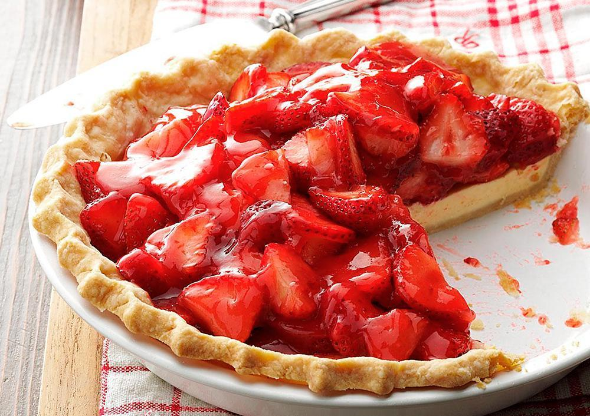

Torta de morango
Ingredientes
- Massa:
- 1 pacote de biscoito maisena
- 1/2 xícara de margarina
- Recheio:
- 700 ml de leite
- 1 lata de leite condensado
- 2 colheres de essência de baunilha
- 4 colheres de amido de milho
- 2 gemas peneiradas
- 1 lata de creme de leite
- Cobertura:
- 2 caixas de morangos
- 1 pacote de gelatina de morango
Modo de preparo
- Massa:
- Passe os biscoitos pelo processador até formar uma farofa fina.
- Coloque em uma tigela e vá misturando a margarina até formar uma massa lisa.
- Forre uma forma de aro removível, asse por mais ou menos 15 minutos.
- Recheio:
- Misture bem, mexa até formar um creme, deixe amornar e junte o creme de leite.
- Coloque o creme na forma por cima da massa já assada.
- Lave bem os morangos e pique em fatias no sentido do comprimento.
- Arrume por cima do creme, reserve.
- Faça a gelatina com 350 ml de água, deixe gelar até que fique num aspecto grossa, que escorra ainda da colher e coloque devagar por cima dos morangos.
- Leve à geladeira para acabar de endurecer.
- Desenforme.
- Sirva gelada.
- Bom apetite
- Bom apetite
